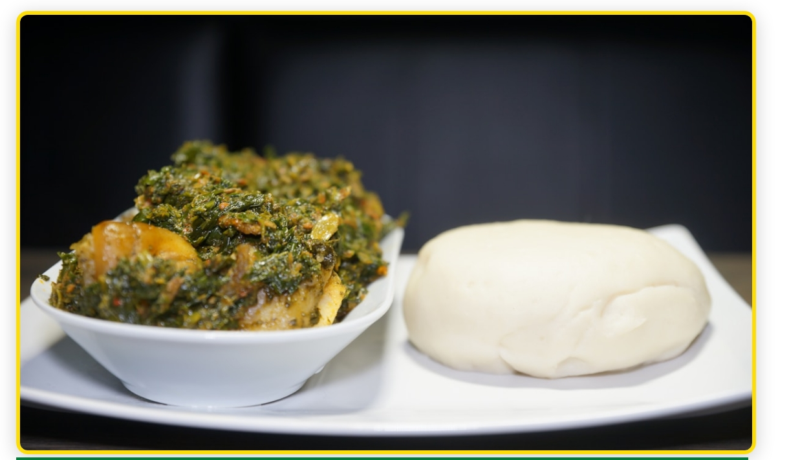

Welcome to Rodehsia , also knwon as Zimbabwe , the land that has had so much to offer us in the long run.My name is Kundai Chatizembwa and I will be your tour guide into your next possible destination. Come and venturea long onto this magical and msytical ride where the light shines beyond horizons of Great Zimbabwe
Why Visit Zimbabwe?
This is my home country . I have witnessed not just the beauty in life that is has offered me by the beauty it has offered towards all those around foreigners and loacls.
Top Destinations
Victoria Falls
Victoria Falls
This historcial landmark was discovered in 1855 by the scottsish explorer named David livingstone,which gave the falls global recognititon and was therefeore named after the British Queen Victoria .

Hwange National Park
Zimbabwe's largest national park, home to over 100 mammal species and 400 bird species. Famous for elephant herds.

Matobo National Park
Ancient granite formations, rhino tracking, and 3,000-year-old rock art. A UNESCO World Heritage Site.
Essential Travel Tips
Preparing for your trip
Visa Information
- Available for for most nationalities
- Single entry: $30 USD
- Double entry: $45 USD
- KAZA visa: $50 (Zimbabwe)
Best Time to Visit
- Dry season : May to October
- Best wildlife viewing: August to October
- Victoria Falls high water: March to May
- Winter season: September to December
Money Matters
- Currency: USD primarily used
- Credit cards accepted in cities
- Mobile money: EcoCash available
- Cash recommended for rural areas
Getting Around
- Domestic flights to major cities
- Car rentals available
- Organized safaris recommended
- Inter-city buses available
Suggested Itineraries
Unforgettable wildlife encounters await
3-Day Victoria Falls Experience
Day 1: Explore Victoria Falls, visit the rainforest, enjoy sunset at the Lookout Café
Day 2: Helicopter flight over the falls, afternoon sunset cruise on the Zambezi River
Day 3: White water rafting or day trip to Chobe National Park (Botswana)
7-Day Wildlife & Culture
Day 1-2: Harare – National Gallery, Mbare Market, local restaurants
Day 3-5: Hwange National Park – game drives, safari lodge experience
Day 6-7: Victoria Falls – adventure activities and relaxation
10-Day Zimbabwe Highlights
Day 1-2: Harare – city exploration and culture
Day 3: Great Zimbabwe Ruins – ancient history
Day 4-6: Bulawayo and Matobo National Park – rhino tracking and rock art
Day 7-9: Hwange National Park – comprehensive safari experience
Day 10: Victoria Falls – the grand finale
Food & Culture

Authentic flavors of Zimbabwe
Sadza: Cornmeal staple, the foundation of Zimbabwean meals
Nyama: Grilled meat, often beef or chicken
Matemba: Dried fish, a protein-rich delicacy
Maputi: Roasted corn kernels, a popular snack
Maheu: Traditional fermented drink made from maize
Cultural Etiquette
Greetings: Use "Makadii" (Shona) or "Sawubona" (Ndebele) to show respect
Tipping: Appreciated but not mandatory (10% in restaurants is customary)
Photography: Always ask permission before photographing people
Dress: Modest clothing recommended, especially in rural areas
Festivals & Events
Harare International Festival of the Arts (HIFA) – April/May
Victoria Falls Carnival – December